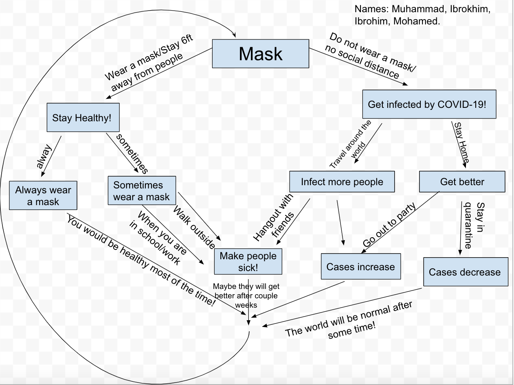

Our teacher assigned this project to teach us how to use many things about github and how to use IDE to collobarate with our partners. This project have helped us with many things such as how to use the terminal to code, using git commands to practice coding, how to use README.md files, and last but not least it taught us how to collobarate with our partners when we are using IDE between Github.com.
We had faced many challenges throughout this project such as having merge conflicts, communications, and time managements. We overcome this challenges by looking through our notes and using our best knowledge to overcome these challenges.
If we had more time, then we would use that time to create a "html" file to make it more interesting and more appealing.
Preview of the project! Github repo of the project! 